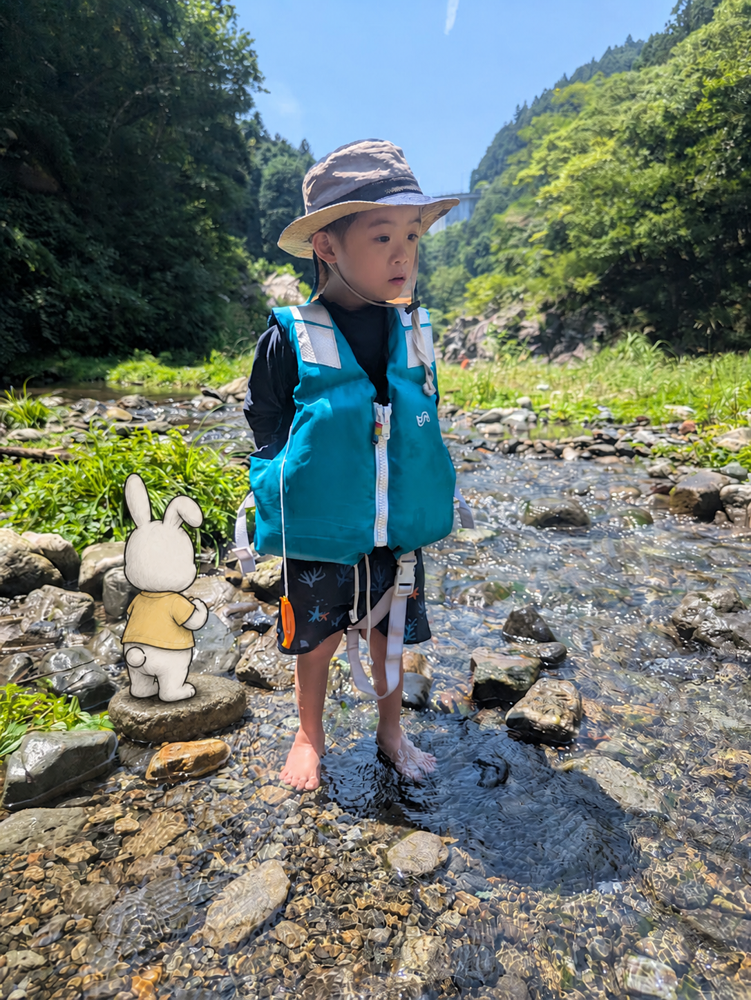
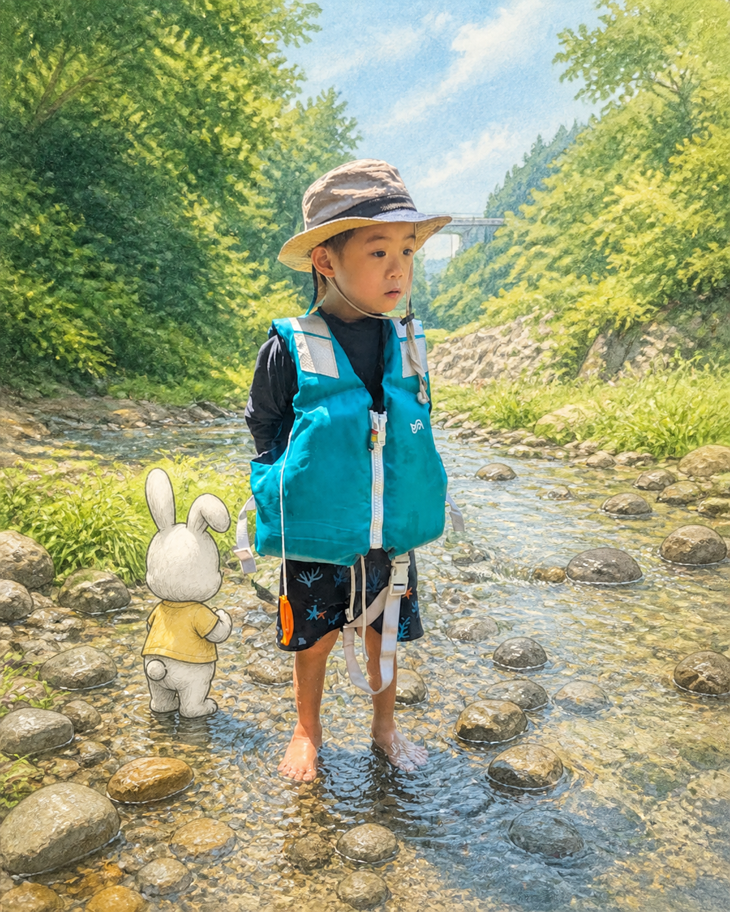
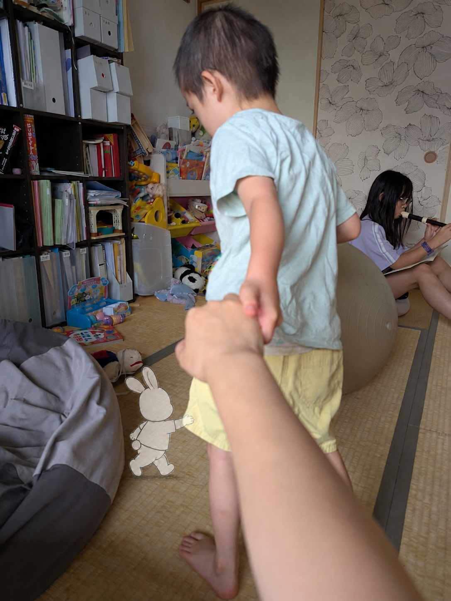
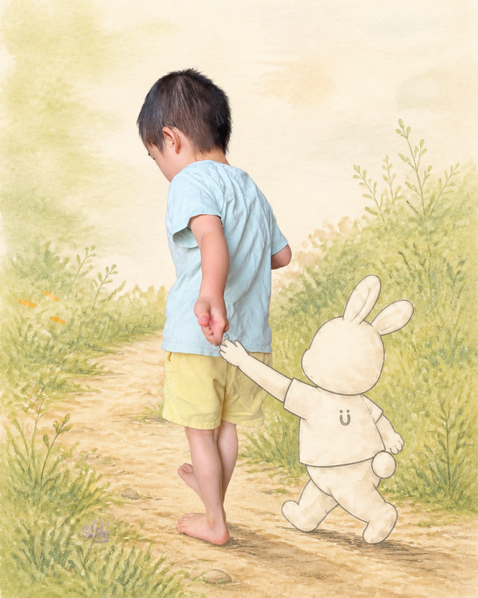
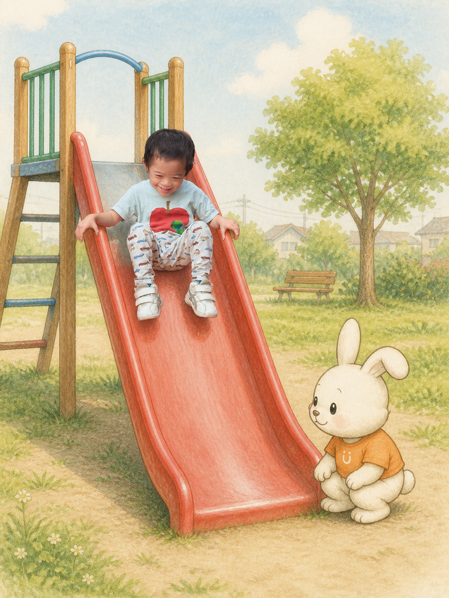

園
二和保育園今日 12:40
給食のあと、自分で帽子を持ってきて先生に渡していました。外へ行きたいことを、いつもの物で伝えていたようです。
ミモの見方 · 物で「次」を伝える家庭や園で残した出来事を、そのまま時系列で振り返れます。
写真と言葉をつないで、今月の姿を絵本のように振り返ります。
給食のあと、自分で帽子を持ってきて先生に渡していました。外へ行きたいことを、いつもの物で伝えていたようです。
ミモの見方 · 物で「次」を伝える
お気に入りの箱を少し遠くへ置くと、座ったまま手を伸ばして、自分のところへ寄せていた。
ゲンの見方 · 届く方法を探している同じ小さなものを見つけて、隣にいる私の顔を見てから、もう一度そのものを見ていた。
見つけたこと · 同じものを見るできるようになった順番ではなく、夢中になったことと、自分で見つけた方法の記録。
CHAPTER 04 · この春

川の中へ入る前に、少し離れたところから流れを見ていた。自分のタイミングを、静かに探していたのかもしれない。
新しい場所では、まず全体を見てから自分の方法を選ぶことが増えました。
MEMORY CARDS

見つけた進まない時間にも、選んでいることがある。

見つけた手を引くことで、行きたい方向を伝えた。
自分のタイミング

伝え方・選ぶこと

楽しさ・繰り返すこと
発達段階を証明する写真でなくて大丈夫です。まず写真や思い出をそのまま追加します。